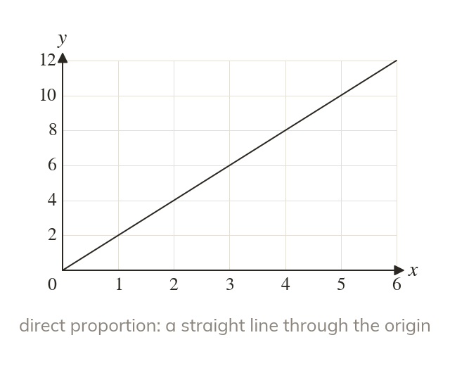
Direct is a straight line
A direct proportion graphs as a straight line through the origin. Its steepness is the multiplier.
A graph shows at a glance which kind of proportion is at work, and a conversion graph works like a calculator. Today we read both.
Work down the page at your own pace. Write every answer in your book first, then click to check it.
Read each card, then follow the worked examples one step at a time.

A direct proportion graphs as a straight line through the origin. Its steepness is the multiplier.
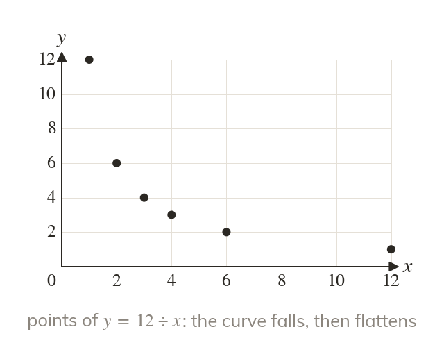
An inverse proportion graphs as a curve that falls steeply, then flattens. It gets closer and closer to each axis but never meets it.
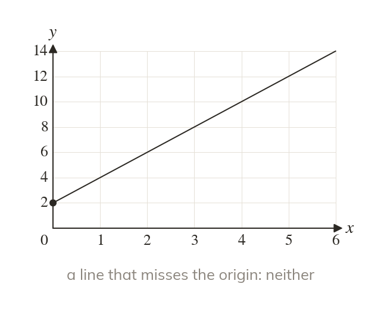
A straight line that misses the origin shows neither kind of proportion. Nor does a curve that rises.
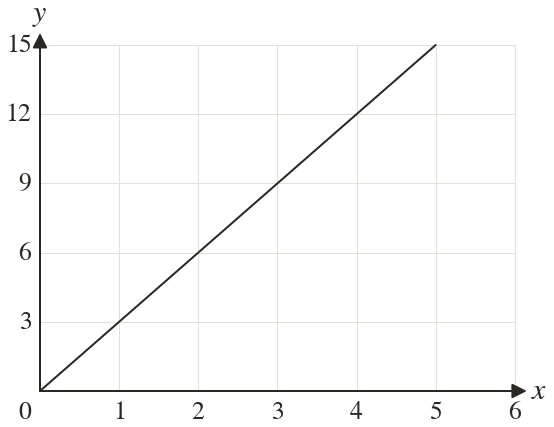
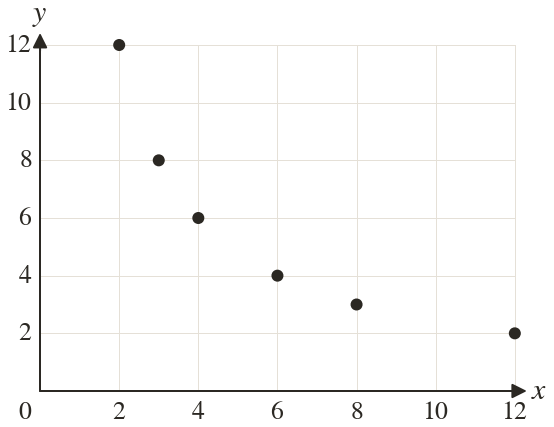
Pick an answer. If it's wrong, the feedback tells you which mistake it was.
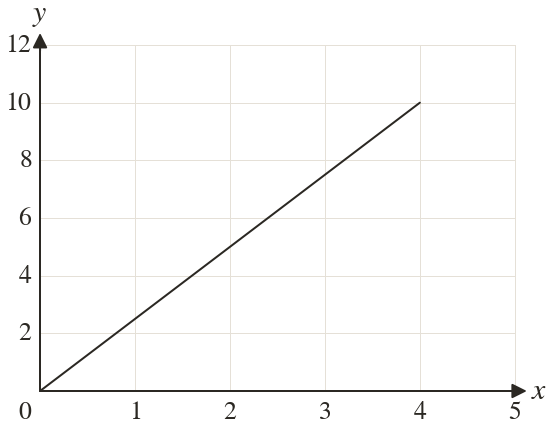
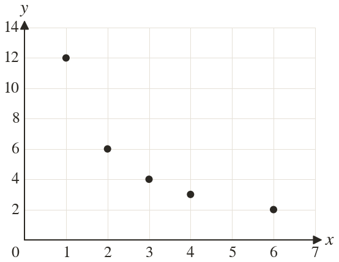
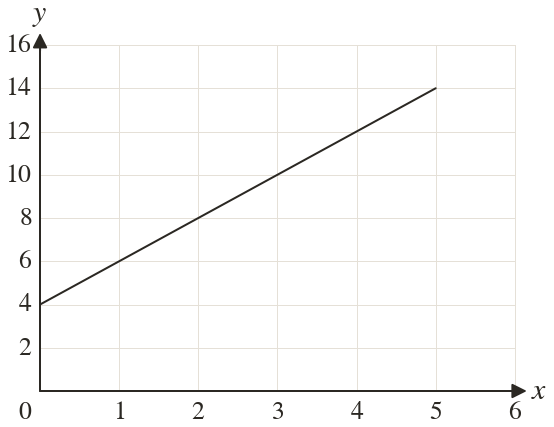
Read each card, then follow the worked examples one step at a time.
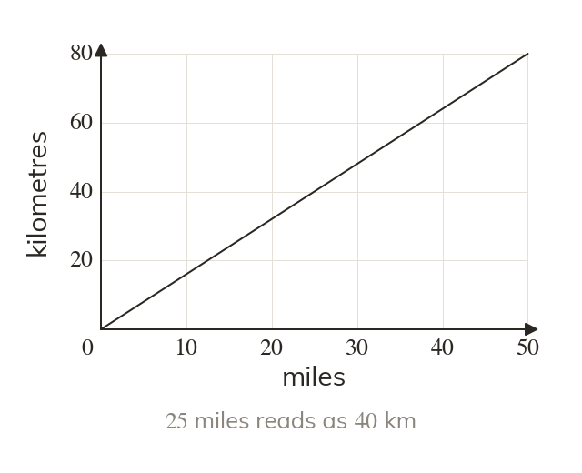
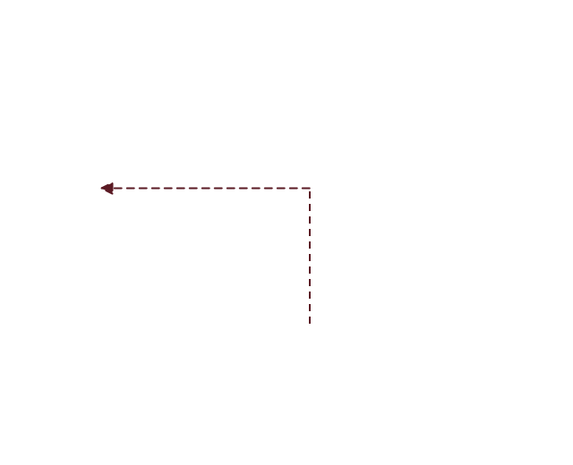
A conversion graph is a direct proportion graph used as a calculator. A value is read up to the line and across to the other axis.
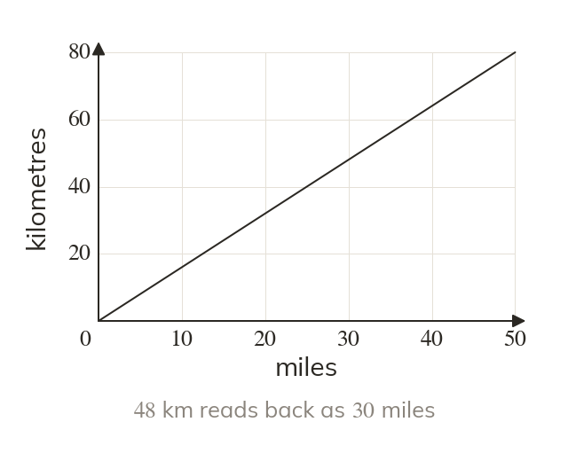
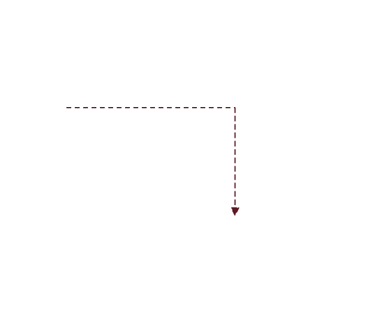
The graph converts both ways, starting from whichever axis holds the value. A reading is an estimate limited by the scale.
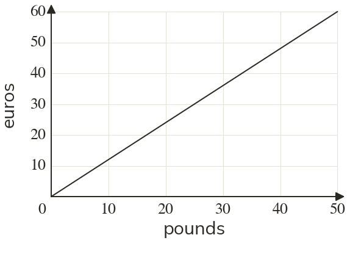
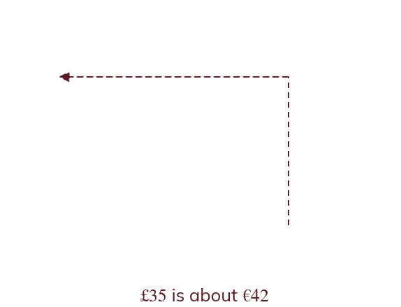
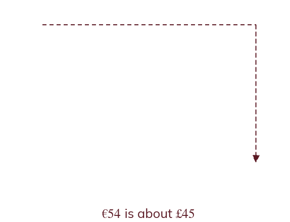
Pick an answer. If it's wrong, the feedback tells you which mistake it was.
Printable worksheet — the questions with room to work.
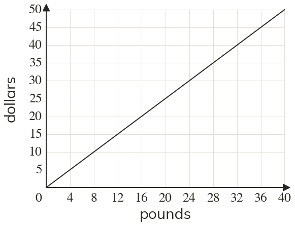
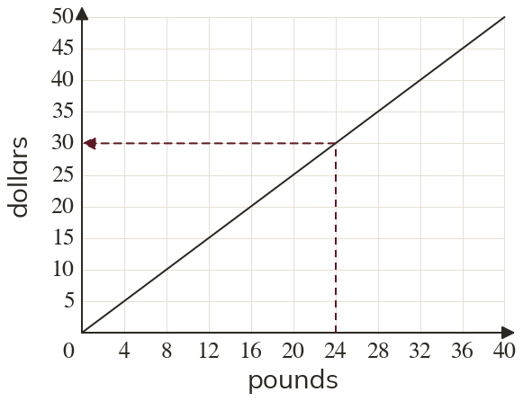
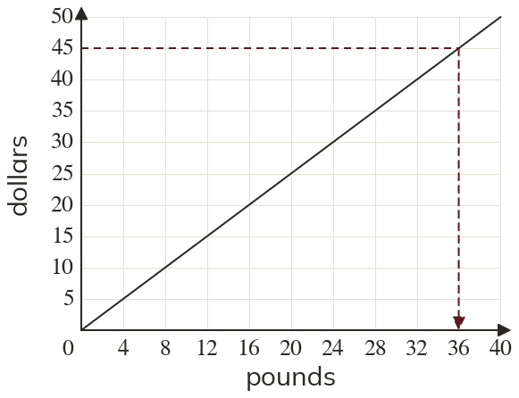
Finished? Next lesson: 10.22.4 Travel Graphs.
Log in, then search for a code to practise that skill.